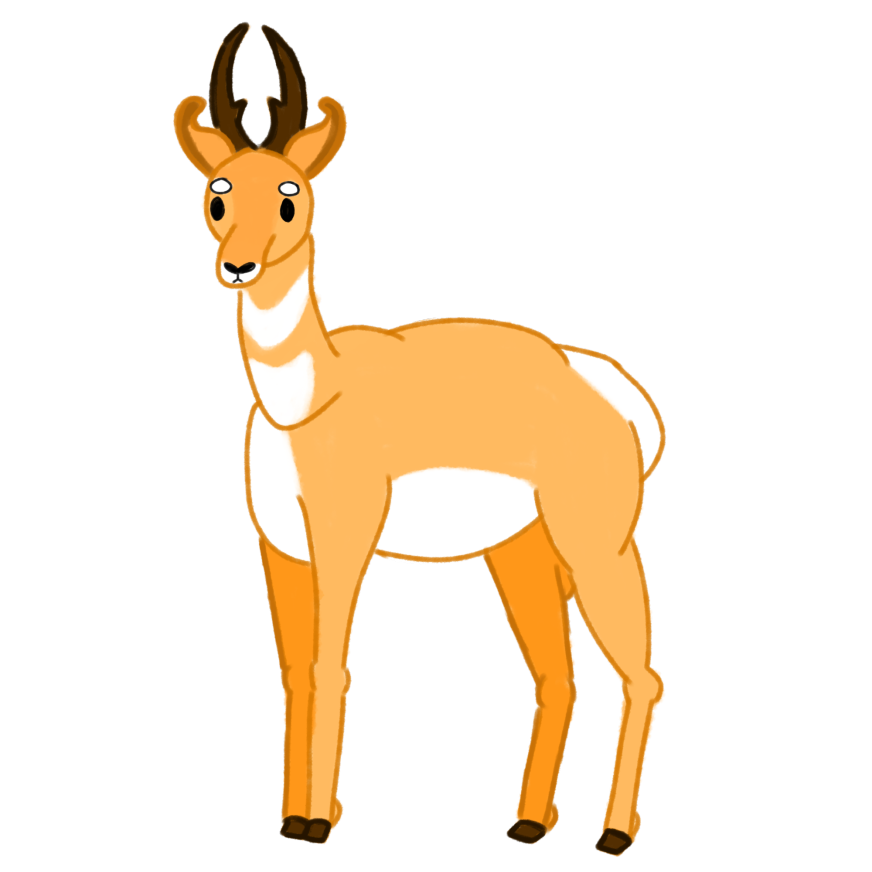

12 years in the making, what have we accomplished so far?
2023
At first, the CPR started as nothing more than a simple project developed by three high school students that were willing to make a change. As time went on, they started getting the help of other students and the movement began to gain momentum, tackling much bigger tasks. At the start of 2024, support was given to the CPR by CETYS, which helped us to get more volunteers inside and outside the school.
2024
2023
In 2025, the CPR began with a social media campaign, in which it invited Mexicali's citizens to help in monthly restoration events. The campaign was surprisingly well received, which allowed us to continue with these events across the entire city. At the end of 2026, Mexicali's main streets became a lot cleaner with the help of the CPR and its volunteers.
2025
2026
In 2027, the CPR was recognized by the Government of Mexicali, and was granted a large amount of support. By late 2027, the CPR started an awareness campaign, and held conferences in the entirety of B.C., later expanding into Sonora and California. In mid-2028, 90% of Mexicali's parks were able to go back to their original state. Our achievements allowed us to expand to all of B.C., and luckily, with the same effect as in Mexicali.
2027
2028
In 2029, the CPR started to put into play The Greenspace Program, which consisted of cleaning large vacant lots and acquiring them to continue with their improvement. With this, the next stage of the CPR starts. After improving some of our greenspaces, at the beginning months of 2030, we decided to start inviting small businesses to locate their establishments in our parks.
2029
2030
The success of the restoration efforts lead us to start more charitable projects with the extra funds, such as the establishment of soup kitchens for homeless people or communities with high food insecurity to provide meals in the area. Also this would be funded by events in some areas to raise money to help with the various charity efforts. 2032 was a great year for our charity campaign, becoming much more successful than ever. We have been able to continue with this project to this day, and are planning on supporting other food banks and charities in the future.
2031
2032
We changed our name in 2033, from the California Project for Revitalization, to the Californias Project for Revitalization. It might look like a small change, but it represents how far we've come. The CPR's support isn't just limited to B.C., but it is now expanded to California and B.C.S. And this year, 2034, the CPR has continued its growth and influence in the protection of the environment. Our Greenspace Program is still in action, and has had a big impact in all the cities of B.C. and B.C.S. On the other hand, California is still a work in progress, half of this state has been influenced by our organization, but we believe that by 2035, we will reach the same point as all the other states.
2033
2034